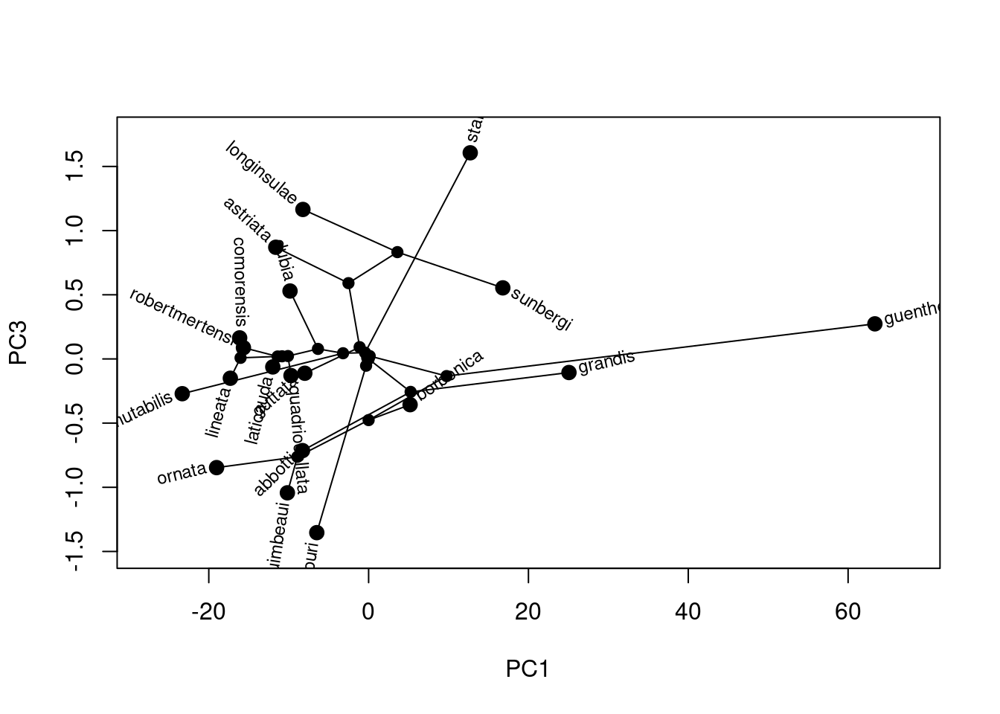

# Load required packages
library(ape)
library(geiger)
library(phytools)
library(ggplot2)
library(patchwork)1 A brief introduction to phylogenetics in R
Loading required packages:
1.1 Practice problems
- Download the following two files for Phelsuma geckos from the book website:
phel.csvandphel.phy(Harmon et al. 2010).phel.csvis a CSV file containing trait values for ten different morphological traits.phel.phyis a phylogeny of thirty-three species. Read both data and tree in from file and usename.check()to identify any differences between the two data sets. If you find differences, prune the phylogeny and subsample the trait data to include only the species present in both the data file and the tree. Plot the tree.
# Get data
pheno_data <- read.csv(
"http://www.phytools.org/Rbook/1/phel.csv", row.names = 1
)
tree <- read.tree("http://www.phytools.org/Rbook/1/phel.phy")
# Taking a look at the data
head(pheno_data) svl jaw noseye eyed eyeeye hw hn
abbotti 53.66667 14.43333 6.666667 3.033333 4.166667 10.033333 22.10000
astriata 51.38462 13.20000 6.381818 2.500000 4.045455 8.691667 20.95833
borbonica 66.20000 16.43000 7.960000 2.800000 4.840000 12.060000 25.43000
cepedianaA 51.80000 13.22667 6.226667 2.406667 4.166667 9.433333 21.49333
dubia 53.06250 13.21333 6.300000 2.075000 4.418750 8.950000 21.56875
guentheri 117.00000 28.70000 14.450000 5.100000 8.950000 22.500000 45.35000
jaww uhl lhl
abbotti 9.050000 9.433333 6.766667
astriata 7.180000 8.250000 5.983333
borbonica 10.633333 10.942857 7.612500
cepedianaA 8.008333 8.180000 5.654545
dubia 7.690000 8.366667 5.753333
guentheri 17.400000 16.600000 11.100000tree
Phylogenetic tree with 33 tips and 32 internal nodes.
Tip labels:
comoraegrandensis, vnigra, anjouanensis, robertmertensi, pasteuri, laticauda, ...
Rooted; includes branch lengths.# Checking for differences between the data sets
check <- name.check(tree, pheno_data)
check$tree_not_data
[1] "andamanense" "anjouanensis" "cepedianaB"
[4] "comoraegrandensis" "edwardnewtoni" "gigas"
[7] "inexpectata" "kochi" "leiogaster"
[10] "parkeri" "pasteuri" "rosagularis"
[13] "serraticauda" "vnigra"
$data_not_tree
[1] "cepedianaA"# Pruning the tree to match data
final_tree <- drop.tip(tree, check$tree_not_data)
final_tree
Phylogenetic tree with 19 tips and 18 internal nodes.
Tip labels:
robertmertensi, laticauda, lineata, comorensis, quadriocellata, dubia, ...
Rooted; includes branch lengths.# Keep in the data frame only taxa that are in the tree
final_pheno <- pheno_data[final_tree$tip.label, ]
head(final_pheno) svl jaw noseye eyed eyeeye hw hn
robertmertensi 47.60000 12.30000 5.9625 2.350000 3.710000 8.480000 20.00000
laticauda 50.93750 13.12500 6.1250 2.226667 4.375000 9.156250 20.56875
lineata 46.02000 12.22800 5.6000 2.157447 4.058000 8.665957 19.45800
comorensis 47.14286 12.37143 5.8000 2.100000 3.933333 8.714286 19.81429
quadriocellata 53.00000 13.75000 6.0000 2.200000 4.450000 9.900000 21.15000
dubia 53.06250 13.21333 6.3000 2.075000 4.418750 8.950000 21.56875
jaww uhl lhl
robertmertensi 7.350000 7.575000 5.250000
laticauda 7.969231 8.316667 5.891667
lineata 7.241304 7.202703 5.182051
comorensis 7.114286 7.314286 5.380000
quadriocellata 8.350000 8.250000 5.900000
dubia 7.690000 8.366667 5.753333# Plot the tree
plot(final_tree)- Use
phyl.pca()to run a phylogenetic principal component analysis (PCA) of the morphological data set and tree from practice problem 1. When data for different variables in a PCA have different orders of magnitude, it often makes sense to transform by the natural logarithm and conduct our analysis on the log-transformed values instead of on the original traits. Inspect your data to see if this applies and then decide whether or not to log-transform before undertaking your phylogenetic PCA. After you’ve obtained a result for the PCA, create a screeplot to visualize the distribution of variation between the different principal component axes.
# Perform phylogenetic PCA
pca <- phyl.pca(final_tree, final_pheno)
pcaPhylogenetic pca
Standard deviations:
PC1 PC2 PC3 PC4 PC5 PC6
0.843018016 0.031026258 0.025212345 0.021589766 0.016268797 0.013849981
PC7 PC8 PC9 PC10
0.007047147 0.005435102 0.004776059 0.003284026
Loads:
PC1 PC2 PC3 PC4 PC5
svl 0.9999053 -0.01000824 0.006871026 -0.003374178 -0.0002305335
jaw 0.9961933 0.04141104 0.040942394 -0.030008137 0.0197234893
noseye 0.9961428 -0.02767322 0.040672296 -0.019964183 -0.0483030086
eyed 0.9219025 0.06912433 0.000145796 -0.140928915 -0.2706281183
eyeeye 0.9664016 0.12525023 -0.060244831 0.014826908 0.2041541534
hw 0.9905783 0.07880385 -0.057263869 -0.087077681 0.0166403194
hn 0.9961222 0.07041295 -0.015318076 0.048329317 -0.0140345807
jaww 0.9808645 -0.04636245 -0.184855183 -0.022132188 -0.0220226136
uhl 0.9867331 -0.13722798 -0.049202943 0.041799930 0.0236962841
lhl 0.9772051 -0.11752704 -0.009169470 0.121780363 0.0546134754
PC6 PC7 PC8 PC9 PC10
svl -0.005382531 -0.0008324387 -0.0007677909 0.0004646226 0.0004164433
jaw 0.047441908 0.0248727578 -0.0058814817 0.0031244424 -0.0021247618
noseye 0.015724732 -0.0006341286 0.0430018976 0.0023434645 -0.0211047680
eyed 0.190365638 -0.0379885680 0.0621004043 0.0581208337 0.0854421226
eyeeye -0.044275914 0.0044588748 0.0467763913 0.0234067434 0.0116596316
hw 0.023674650 -0.0256000605 -0.0016469256 -0.0134127827 -0.0027369653
hn 0.002434144 0.0011243296 0.0005459473 -0.0027775843 -0.0002157374
jaww -0.002093613 0.0190151420 -0.0042700446 0.0142197382 -0.0047639416
uhl 0.039274297 0.0139984260 0.0132246100 -0.0286562314 0.0078761587
lhl 0.101021863 -0.0486908262 -0.0123355346 0.0234627715 -0.0090268595# Create a screeplot with variance explained by each PC
p_screeplot <- data.frame(
Variance = signif(as.princomp(pca)$sdev ^ 2, 2),
PC = factor(paste0("PC", 1:10), levels = paste0("PC", 1:10))
) |>
ggplot(aes(x = PC, y = Variance * 100)) +
geom_col(fill = "dodgerblue4", color = "black") +
geom_text(aes(label = Variance), vjust = -0.3) +
ylim(0, 100) +
labs(
title = "Screeplot for phylogenetic PCA of Phelsuma sp. morphological traits",
x = "", y = "Variance explained (%)"
) +
theme_bw()
p_screeplot- Use
phylomorphospace()to create a single projection of the phylogeny into morphospace for the first two PC axes from practice problem 1.2. Can you think of a way to project the tree into a space defined by more than two principal component dimensions? Hint: look up the help pages forphylomorphospace3d()andphyloScattergram()for ideas, or consider simply subdividing your plotting device usingpar(mfrow).
# Create phylomorphospace plot for different pairwise combinations of PCs
combs <- list(
c(1, 2),
c(1, 3),
c(2, 3),
c(1, 4)
)
p_pms <- lapply(combs, function(x) {
## Get phylomorphospace coordinates
score_df <- as.data.frame(scores(pca)[, x])
cols <- names(score_df)
pms <- phylomorphospace(final_tree, score_df)
coord <- data.frame(
xstart = pms$xx[pms$edge[, 1]],
ystart = pms$yy[pms$edge[, 1]],
xstop = pms$xx[pms$edge[, 2]],
ystop = pms$yy[pms$edge[, 2]],
nodestart = pms$edge[, 1],
nodestop = pms$edge[, 2]
)
p_phylomorphospace <- ggplot() +
geom_point(
data = score_df,
aes(x = .data[[cols[1]]], y = .data[[cols[2]]]),
size = 3, color = "darkblue"
) +
geom_segment(
data = coord, aes(x = xstart, y = ystart, xend = xstop, yend = ystop),
linewidth = 0.5
) +
theme_classic() +
labs(x = cols[1], y = cols[2])
return(p_phylomorphospace)
})

# Arrange plots in a panel
wrap_plots(p_pms) +
plot_annotation(
title = "Phylomorphospace of different pairwise combinations of PCs"
)References
Harmon, Luke J, Jonathan B Losos, T Jonathan Davies, Rosemary G Gillespie, John L Gittleman, W Bryan Jennings, Kenneth H Kozak, et al. 2010. “Early Bursts of Body Size and Shape Evolution Are Rare in Comparative Data.” Evolution 64 (8): 2385–96.